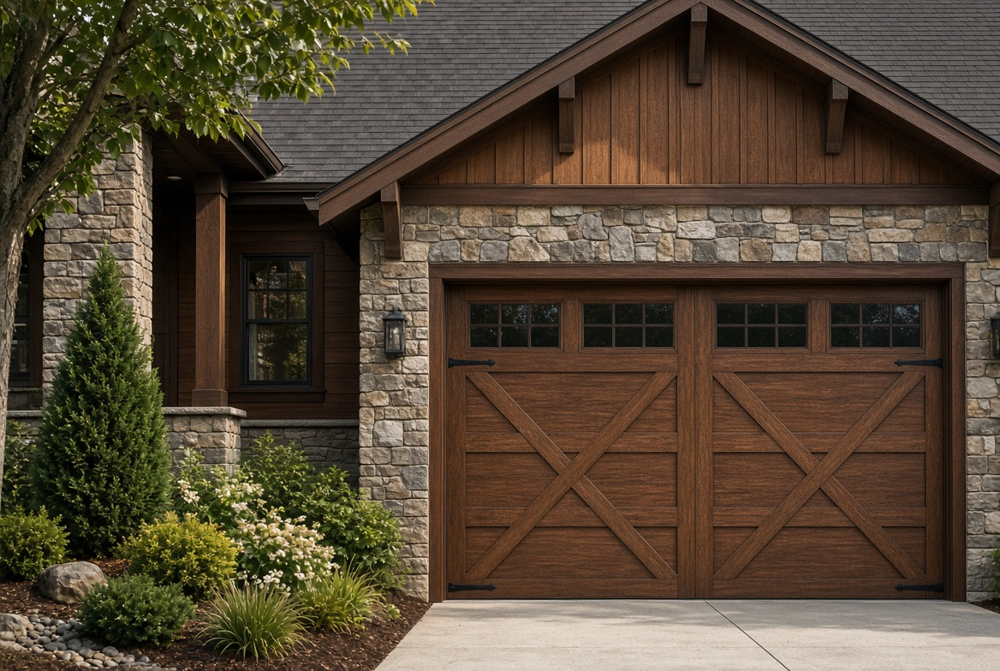
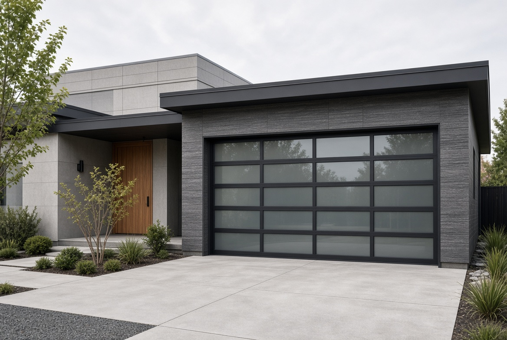

Insulated steel
The everyday Columbus and surrounding areas door. Raised-panel or shaker, painted to the trim. Polyurethane core stays quieter and warmer than a hollow non-insulated door.
Mac Doors is an authorized Haas dealer. Haas Door is made in Ohio, so the line is a local fit for Columbus homes. Style is what the street sees. Insulation, steel, and the spring are what you live with. The quote covers the whole system, not just the panels.
The everyday Columbus and surrounding areas door. Raised-panel or shaker, painted to the trim. Polyurethane core stays quieter and warmer than a hollow non-insulated door.

Overlay hinges and windows for brick, stone, and craftsman fronts. Composite and steel versions give the wood look without the yearly stain.

Aluminum frame with frosted or clear glass for newer builds. We check headroom and a wall-mount opener so the ceiling stays clear.
Width and height, insulation level, windows, color outside the standard set, and whether the opener, tracks, or weatherseal are reused. A custom-width opening costs more than a 16×7.
Local Columbus installers commonly quote standard residential doors in a broad band from several hundred dollars for a basic replacement into the low thousands for insulated or custom doors. Mac Doors prices the actual opening, not a teaser number.
Mac Doors is an authorized Haas dealer. Haas doors are made in Ohio. One manufacturer means matching panels and finishes if a section is replaced later. A standard install includes haul-away of the old door, hardware as specified, a spring sized to the door, a perimeter seal, and a balance test.
Ask for Haas styles and a number